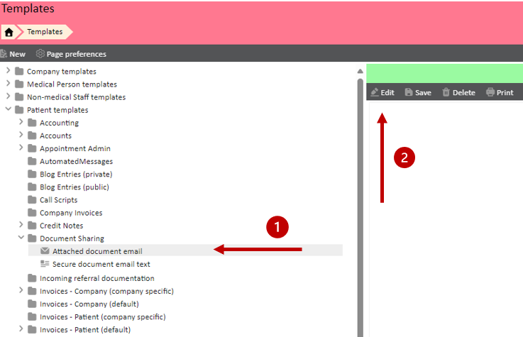
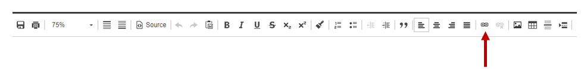
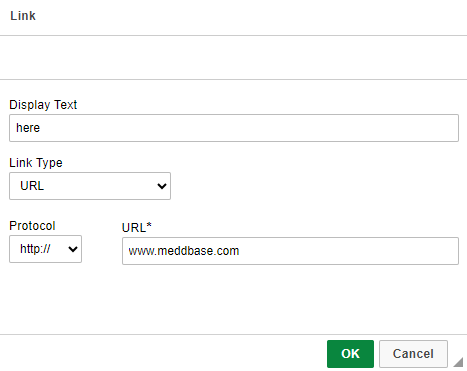
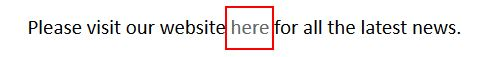
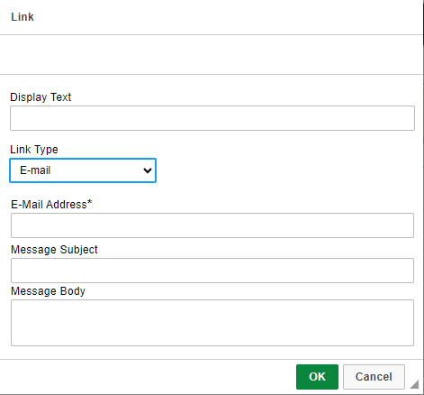
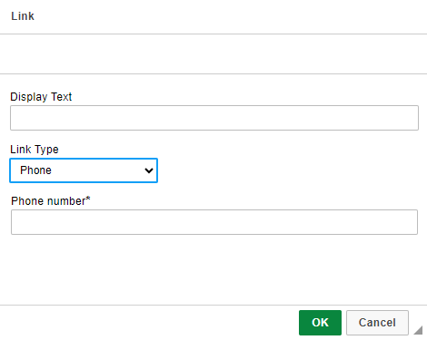

Meddbase allows for the use of templates across many different areas and communication methods. These templates have the ability to contain a link to a URL, Email of Phone Number.
More information about using templates can be found here: Using a Template.
This article will guide you through how to add a link to your template within the 'Text Template' builder. This can be used for creating and editing both document and email templates.
The following sections are outlined in this article:
To open your templates, navigate to Start> Templates. Here you will need to select the template you wish to edit, and then click 'Edit'.

From within the template editor, press 'Ctrl+L' or click on the 'Link' icon at the top of the screen.

From the 'Link' pop up:

Once this has been completed 'OK' can be selected.
From the image below it is visible that the colour of the link is slightly different, again this can be changed using the tools within the template builder.

From within the Link pop-up in the template editor, it is also possible to add a link to an email. This will enable a draft email to be created when the link is clicked on.

From within the Link pop-up in the template editor, it is also possible to add a link to a phone number. This will allow users to make a call to this number.

This works best if the user is viewing the document on their mobile, or they have calling capabilities on the computer.